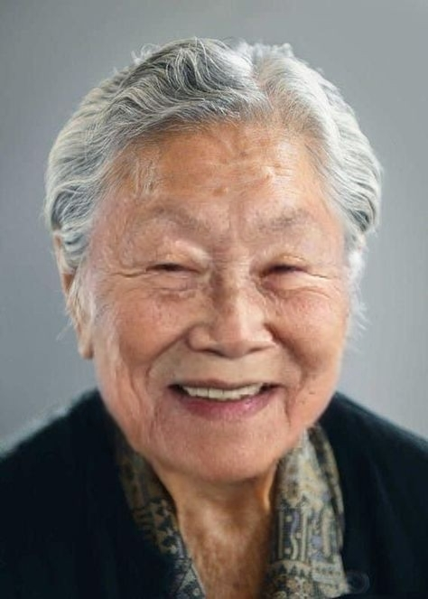
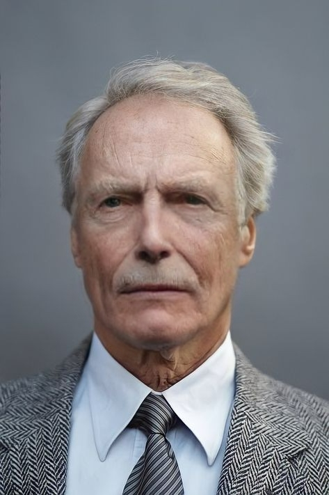
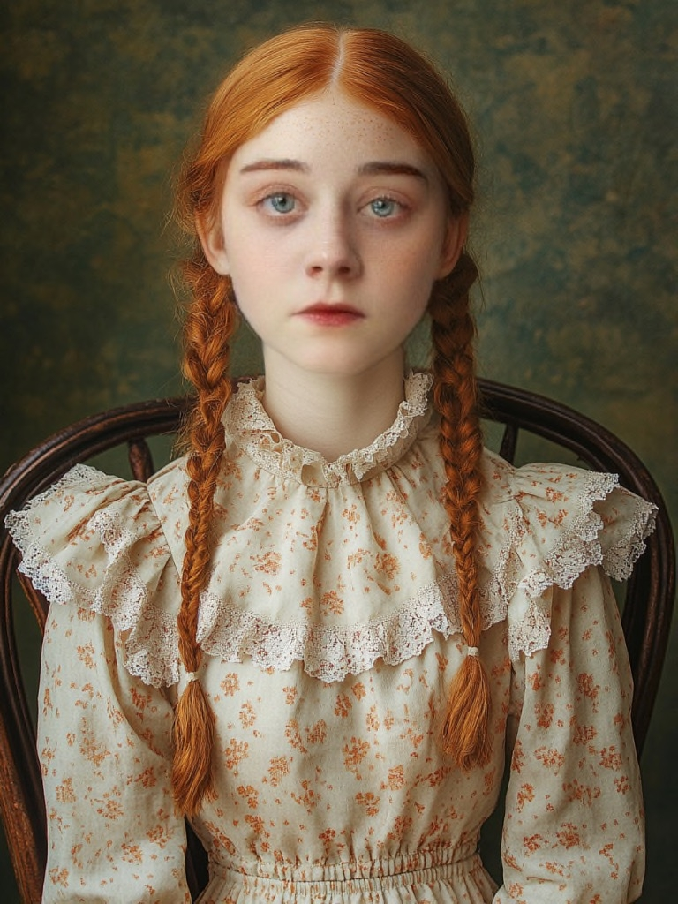

Who's the Real?
문제를 보고, 알맞은 정답을 골라주세요.
각 문제당 5점의 점수가 부과됩니다.
여러 개 선택할 수 있습니다.
각 문제당 5점의 점수가 부과됩니다.
여러 개 선택할 수 있습니다.
1. 두 사람 중 진짜 사람은 누구일까요?
2. 두 사람 중 진짜 사람은 누구일까요?
3. 두 사람 중 진짜 사람은 누구일까요?
4. 다음 중 어느 것이
진짜 사람의 사진일까요?
진짜 사람의 사진일까요?



5. 다음 중 어느 것이
진짜 사람의 사진일까요?
진짜 사람의 사진일까요?
6. 다음 중 어느 것이
진짜 사람의 사진일까요?
진짜 사람의 사진일까요?

7. 다음 중 어느 것이
진짜 사람의 사진일까요?
진짜 사람의 사진일까요?
8. 다음 중 어느 것이
진짜 사람의 사진일까요?
진짜 사람의 사진일까요?

9. 이 동영상 속 주인공이
실제 사람일까요?
실제 사람일까요?
10. 이 동영상 속 주인공이
실제 사람일까요?
실제 사람일까요?
11. 이 동영상 속 주인공이
실제 사람일까요?
실제 사람일까요?
당신의 점수를 계산 중.
당신의 점수를 계산 중..
당신의 점수를 계산 중...
당신의 점수는 0점입니다.
사실, 모든 사진과 영상 속 사람은
실제가 아니었습니다.
사실, 모든 사진과 영상 속 사람은
실제가 아니었습니다.
이 모든 사진은 딥페이크로
만들어진 사진입니다.
당신은 얼마나 맞췄다고 생각하셨나요?
만들어진 사진입니다.
당신은 얼마나 맞췄다고 생각하셨나요?
당신의 눈은 진짜와 가짜를
잘 구별하셨나요?
잘 구별하셨나요?
Who was the real?
Project by 김예림, 김현진, 박소현